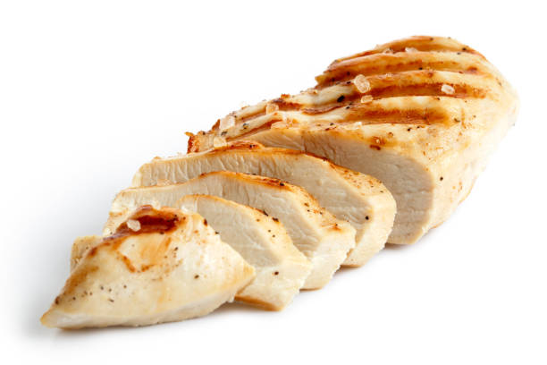

Ovened Chicken Breast

Chickens are just turkeys that can't fly.
Also a great way eat healthy and lean.
Ingredients:
- Chicken Breast
- Virgin Oil
- Salt
- Black Pepper
Steps:
- Wash and dry chicken breast.
- Sprinkle a bit of oil onto the chicken and then use hands to lather the chicken with the oil.
- Add salt and black pepper to taste.
- Bake in oven for 380 degrees Farheniet for 40 minutes
- $Profit?
Make sure chicken breast is thorughly cooked before eating.
Return to index